AIChE Annual Meeting 2026 · poster companion page
Multiscale Computational Framework for Sulfurized Polyacrylonitrile
Synthesis kinetics, structural evolution and cathode performance from DFT to kinetic Monte Carlo
Poster presented at the AIChE Annual Meeting 2026. This page holds the simulation details and the references behind every number on the poster.
References are collected in section 8 (numbered list) and cited in the text by number.
Introduction
What SPAN is and why it matters
Sulfurized polyacrylonitrile (SPAN) is made by heating polyacrylonitrile with elemental sulfur. The backbone cyclizes into a fused pyridine ladder and sulfur binds to it covalently. Sulfur converts to lithium sulfide species solid to solid, nothing dissolves, SPAN delivers about 600 to 700 mAh/g near 1.8 V, and Li||SPAN cells have run 1,200 cycles with no capacity decay. SPAN is amorphous, so its bonding is inferred from spectroscopy and still debated: C–Sx–C, N–Sx–N and N–Sx–C bridges between chains, C=S, intra-chain S rings and pendant C–Sx–H chains have all been proposed.
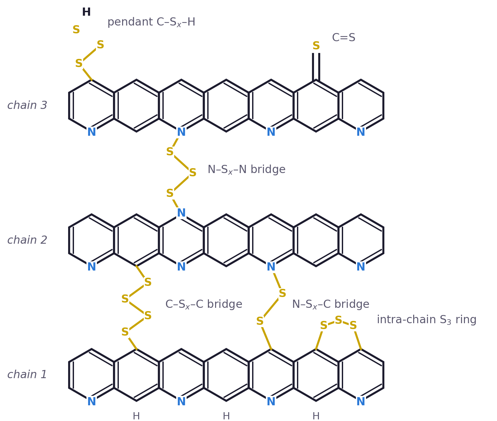
Why covalent sulfur matters: shuttle against SPAN
Schematic, not a simulation. Left: an elemental sulfur cathode forms soluble Li2Sx that drifts to the anode and is lost. Right: in SPAN every sulfur chain is bonded to the cyclized backbone, so it is reduced in place, solid to solid, and nothing dissolves. Press play or drag the slider through one discharge.
References: Manthiram, Fu, Chung, Zu, Su, Chem. Rev. 114, 11751 (2014). Liu, Holoubek et al., Mater. Today 42, 17 (2021) (1,200 cycles, no capacity decay). Mukkabla and Buchmeiser, J. Mater. Chem. A 8, 5379 (2020) (structure review).
Methodology
The framework
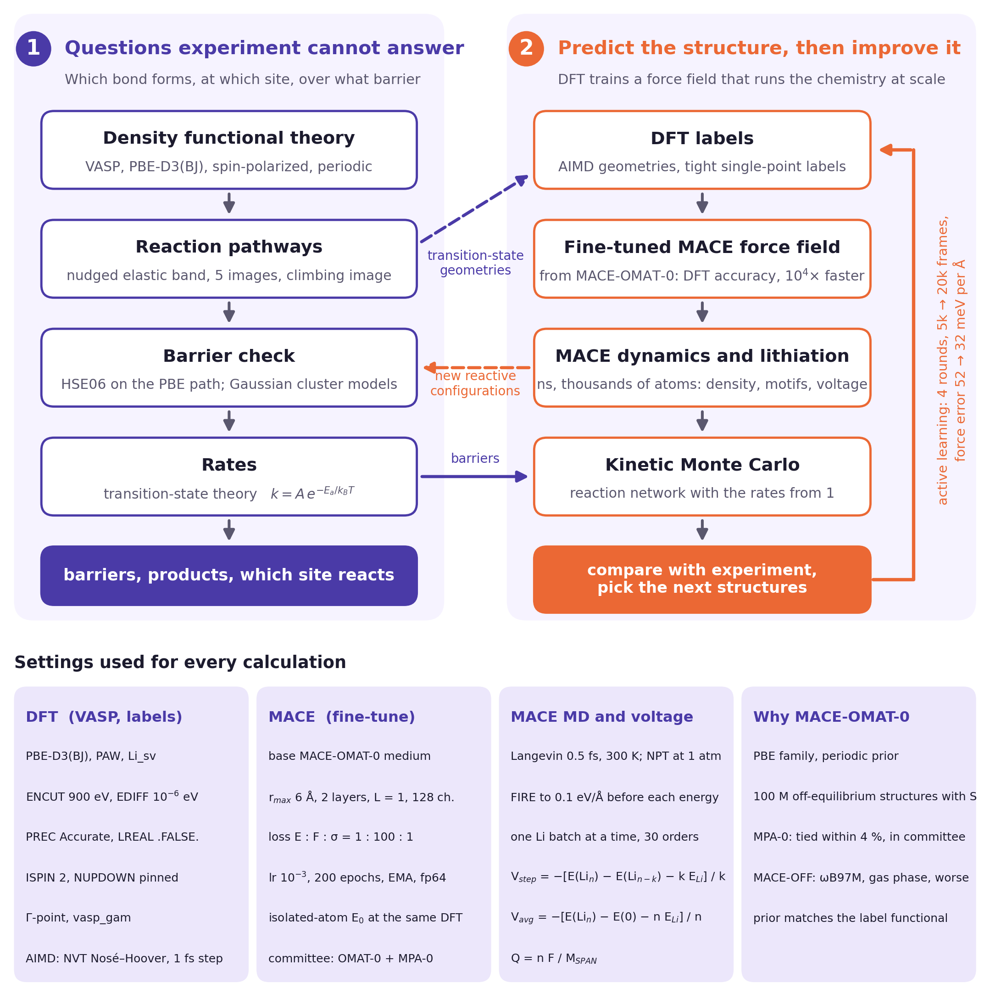
DFT (VASP)
- PBE-D3(BJ), PAW, Li_sv pseudopotential, plane-wave cutoff 900 eV (800 eV converges energies and forces, 900 eV converges stress).
- Labels: PREC Accurate, LREAL .FALSE., EDIFF 1e-6 eV, ISMEAR 0, SIGMA 0.05, ISYM 0.
- Sampling (AIMD only): PREC Normal, LREAL Auto, EDIFF 1e-5, NVT Nosé–Hoover, 1 fs step.
- Spin: ISPIN 2 with NUPDOWN pinned for every cell (free spin lets the moment hop between sulfur atoms and injects 100 to 300 meV/Å of noise into forces).
- Γ-point only (vasp_gam), validated against a 3×1×1 mesh on the training cells.
- Hybrid checks: HSE06 single points on the PBE reaction paths and on the small nitrogen-pocket cell.
- Reaction paths: climbing-image nudged elastic band, 5 to 6 images, spring −5 eV/Ų. Cyclization barriers are cluster free energies (Gaussian, M06-2X/6-311+G(d,p), 573 to 723 K).
Force field (MACE)
- Base model MACE-OMAT-0 medium (r_max 6 Å, 2 layers, L = 1, 128 channels), fine-tuned on our DFT labels. MACE-MPA-0 tied within 4 % and is kept as the committee partner. MACE-OFF (ωB97M, gas phase) was tested and dropped.
- Loss weights energy : forces : stress = 1 : 100 : 1, learning rate 1e-3, 200 epochs, exponential moving average 0.99, float64 training, float32 at inference.
- Isolated-atom reference energies computed at the same DFT level, with Hund's-rule spin pinned.
- Four training rounds: 5.1k, 12.2k, 16.3k and 19.8k frames; held-out error 7.5 meV/atom and 52 → 32 meV/Å across the rounds. On reaction paths never used in training the model reproduces barriers within 0.1 to 0.3 eV.
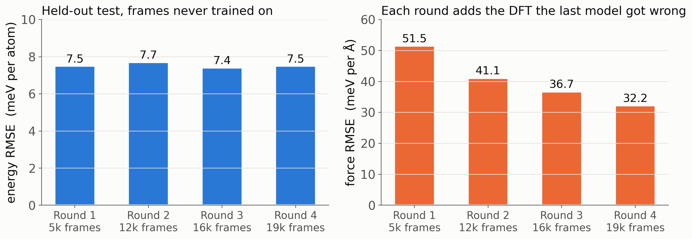
Kinetic Monte Carlo
Gillespie reaction network with rates k = A exp(−Ea / kBT), barriers from the NEB catalog (HSE06-corrected where available). Used for ratios between channels, not for absolute times. This is the last stage of the framework: the rate catalog is built; kinetic Monte Carlo results are generation-2 work.
Synthesis
Synthesis: competing pathways and the role of nitrogen
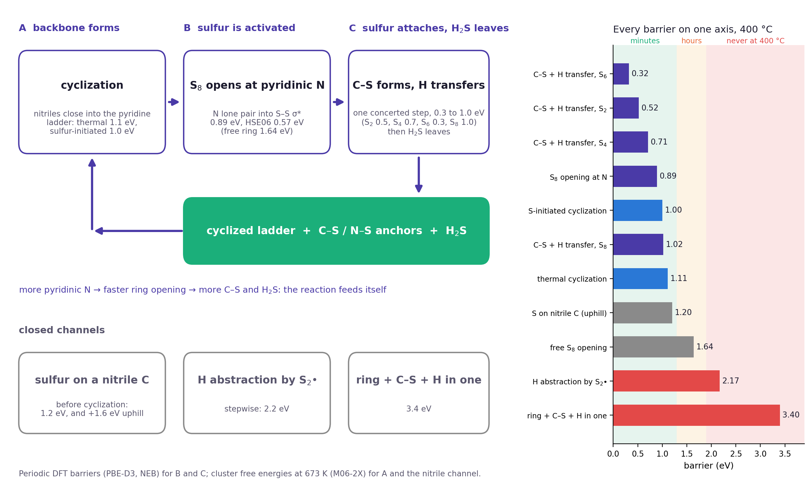
| step | barrier | method |
|---|---|---|
| thermal cyclization | 1.06 to 1.13 eV (ΔG‡, 573 to 723 K) | cluster, M06-2X |
| sulfur-initiated cyclization | 1.00 to 1.06 eV | cluster, M06-2X |
| sulfur on a nitrile carbon before cyclization | 1.2 eV, +1.6 eV uphill | cluster, M06-2X |
| S8 ring opening, free | 1.64 eV (HSE06 1.71) | periodic NEB |
| S8 ring opening at pyridinic N | 0.89 eV (HSE06 0.57) | periodic NEB |
| concerted C–S formation with H transfer, S2 / S4 / S6 / S8 | 0.52 / 0.71 / 0.32 / 1.02 eV | periodic NEB |
| stepwise H abstraction by S2• | 2.17 eV | cluster, M06-2X |
| ring opening + C–S + H transfer in one step | ≥ 3.4 eV | periodic NEB |
The free-ring value is consistent with the S8 ring-opening enthalpy, 1.75 eV.
Why nitrogen activates sulfur: the in-plane sp² lone pair of a pyridinic nitrogen donates into the S–S σ* orbital of S8 (an SN2 displacement at sulfur), so an N–S bond forms while the S–S bond breaks. The transition state is a bond exchange rather than a bond loss, the leaving polysulfide charge is delocalized along the chain, and the result is a stabilized zwitterion. This is the classical amine and phosphine activation of S8 and the chemistry behind nitrogen-based vulcanization accelerators.
References: Bartlett and Meguerian, J. Am. Chem. Soc. 78, 3710 (1956). Davis and Nakshbendi, J. Am. Chem. Soc. 84, 2085 (1962). Zhang, Konopka, Glass, Char, Pyun, J. Polym. Sci. A 57, 7 (2019). Sharma and Champagne, Chem. Eur. J. 29, e202203906 (2023). Order of events in experiment: Wang et al., Nat. Mater. 25, 791 (2026) (operando scattering); Liu et al., Adv. Mater. 37, 2503534 (2025); Frey et al., ACS Energy Lett. 2, 595 (2017); Mao et al., Appl. Surf. Sci. 447, 235 (2018); Zhang, Energies 7, 4588 (2014).
Cathode performance
Discharge curves from structure alone
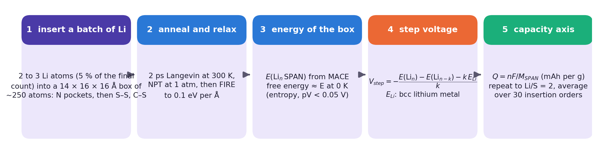
Boxes
Each electrode box holds four pairs of cyclized-PAN chains carrying a chosen mix of sulfur motifs, packed loosely (about 1.0 g/cm³) to avoid overlaps and then compressed with the force field (NPT, 1 atm, 300 K) to its equilibrium density, about 1.55 g/cm³. Final cell about 14 × 16 × 16 Å, 240 to 250 atoms before lithium. Boxes whose bond table changed on densification (opened N–S bridges, bare chains) are rejected.
Lithiation protocol
- Insert a batch of lithium: 5 % of the final lithium count, 2 to 3 atoms. For each atom, 12 candidate sites next to S or N are drawn at random and the lowest-energy one wins; nitrogen pockets win whenever they are drawn, so they fill first.
- Anneal 2 ps with a Langevin thermostat at 300 K, then 4 ps NPT at 1 atm, then relax with FIRE (a damped-dynamics geometry optimizer) to forces below 0.1 eV/Å.
- Take the energy E(Lin SPAN). The free energy is approximated by this 0 K energy; vibrational and configurational entropy and the pV term are neglected, below 0.1 V except near the ends of discharge.
- Step voltage: Vstep = −[E(Lin) − E(Lin−k) − k ELi] / k, with ELi the energy per atom of bcc lithium at the same DFT level. Check of the force field: MACE step voltages lie within 0.15 V of DFT single points on relabeled lithiated boxes (Li/S 0.5 to 2).
- Capacity: Q = n F / MSPAN in mAh per gram of lithium-free SPAN. Repeat to Li/S = 2.
One “insertion order” is one complete run from pristine to Li/S = 2 with its own random draw of candidate sites at every step. The two composition-matched boxes are run with 30 insertion orders each (18 to 24 steps each, about 600 relaxed configurations and about 4 ns of dynamics per box); the generation-1 screen uses 3 to 4 orders per box. The curve on the poster is the mean over the 30 orders and the band is one standard deviation. Charge is the same equation run backwards, removing the cheapest lithium first.
Watch one box discharge
One insertion order from pristine to Li/S = 2: every frame is the relaxed box after one lithium batch. Drag the structure to rotate it, scroll to zoom. The counters are computed from the coordinates with distance cutoffs (S–S 2.35 Å, S–C 1.95 Å, S–N 1.90 Å, S–Li 2.85 Å).
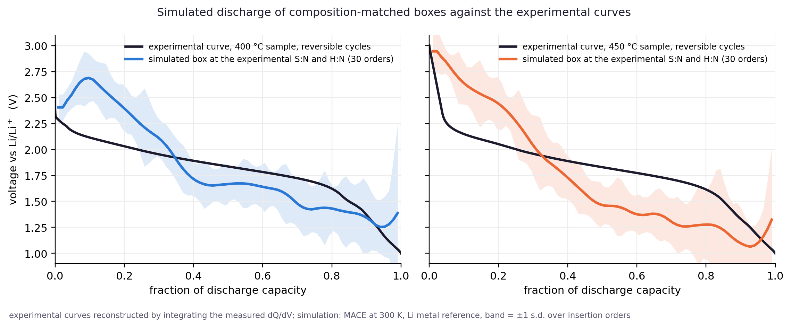
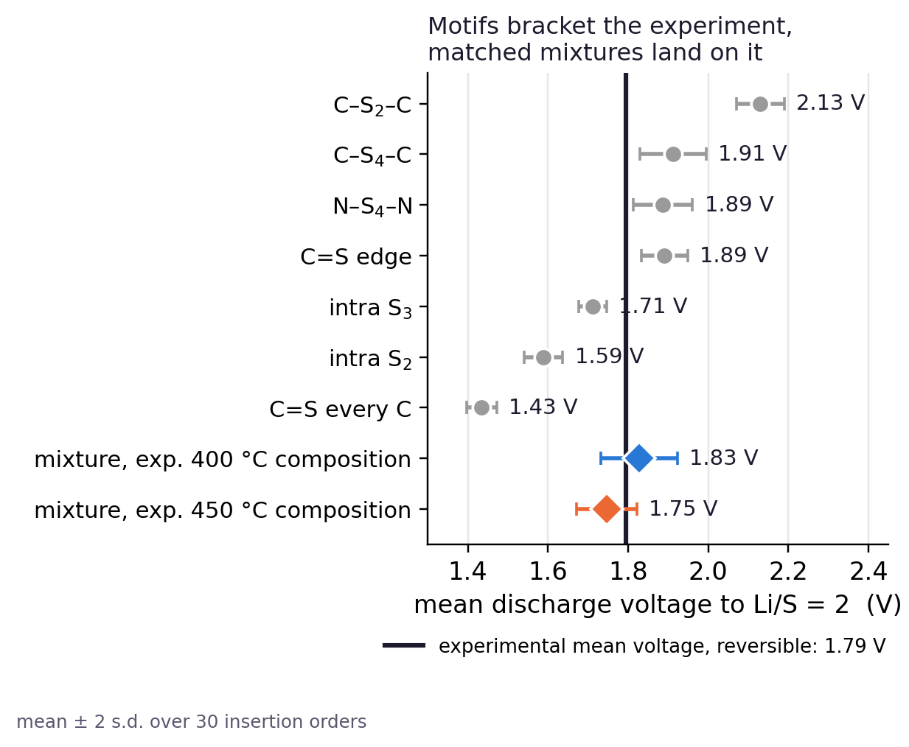
Structural evolution
The evolutionary framework loop
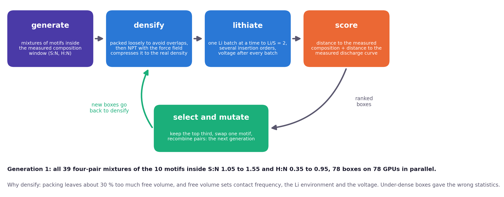
Every proposed motif was built as a periodic cell, relaxed at the same DFT level and included in training, so the force field knows every bonding type. Generation 1: all 39 four-pair mixtures of the ten motifs (the nine motif cells plus a pendant C–S6–H variant) inside S:N 1.05 to 1.55 and H:N 0.35 to 0.95: 78 packings submitted, 72 survived densification, 36 scored so far, with 3 to 4 insertion orders each.
Score = composition distance (S:N and H:N in units of a 0.15 tolerance) + RMS distance between the simulated and the experimental curve over the common capacity range (in units of 0.2 V) + half the mean-voltage distance (in units of 0.2 V). The top third of each generation is kept, one motif is swapped or two parents are recombined, and the new boxes go back to densification.
Generations closing in on the experiment
Step through the loop generation by generation. Violet dots are the boxes kept for the next generation, grey dots were dropped, and the orange star is the experiment. The middle chart overlays the best box of the generation on the measured curve; the right chart tracks the score.
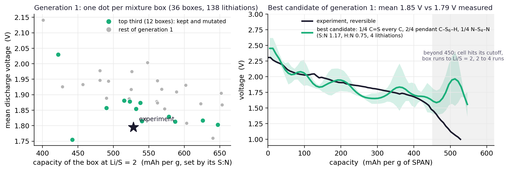
Irreversible capacity loss
Irreversible capacity loss
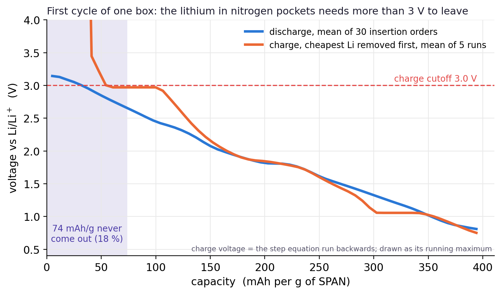
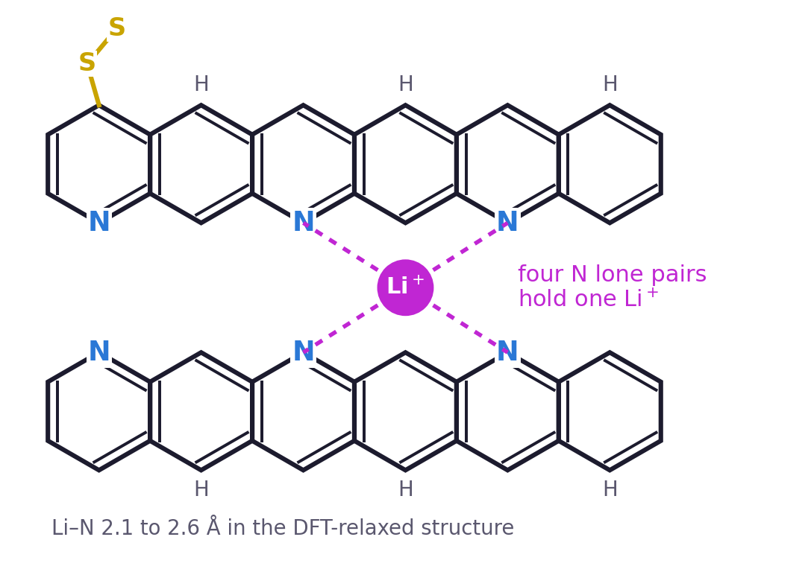
Lithium held in a nitrogen pocket
The first cycle of one box, discharge then charge. The pocket nitrogens are enlarged in blue and the lithium they hold in magenta; the Li–N distances update every step. The shaded capacity on the curve is what does not come back below the charge cutoff.
Pockets of two to four ring nitrogens fill first, at 3 V and above, and need more than the 3 V charge cutoff to empty: 74 of 403 mAh/g (18 %) of the first discharge stay in the C=S box. Across the seven boxes with charge runs the trapped share is 0 to 30 %, and for this box it moves to 10 to 26 % for a ±0.3 V shift of the cutoff. DFT check of the force field for the pocket shown: moving the lithium from the pocket to a sulfur site costs 2.38 eV by DFT (2.67 eV with HSE06) and 2.12 eV by MACE; the sign agrees in 8 of 9 boxes. Charge is computed with no overpotential; the small gap between the branches is path hysteresis of insertion and removal, and a measured cell adds kinetics on top.
Discharge products seen in the trajectories: sulfur chains shorten stepwise through tethered C–S2–Li and C–S3–Li units (Li2S2-like) and end as isolated sulfide units at Li/S = 2, 76 to 99 % of them still bonded to carbon or nitrogen with three to four lithium neighbors. The 1.5 nm box is too small to show whether a separate Li2S phase nucleates.
References: Wang et al., J. Am. Chem. Soc. (2023), doi 10.1021/jacs.3c00628 (Li 1s 53.2 eV and N 1s 398.2 eV after discharge, partial recovery on charge; discharge curves of 450 °C SPAN). Kuai et al. (2024), Raman 600 cm−1 Li–N. Perez Beltran and Balbuena (2021); Sapkota et al. (2023).
Compute and acknowledgements
Compute
VASP 6.3.2, MACE training and MACE dynamics on Texas A&M High Performance Research Computing (HPRC) clusters. Battery500 Consortium, U.S. Department of Energy. Experimental samples and data were provided by experimental collaborators.
Contact: soniyuvraj@tamu.edu
References
References
SPAN: material, structure and electrochemistry
- A. Manthiram, Y. Fu, S.-H. Chung, C. Zu, Y.-S. Su, “Rechargeable lithium–sulfur batteries”, Chem. Rev. 114, 11751–11787 (2014). Sulfur capacity 1,675 mAh/g, Li–S theoretical energy density 2,600 Wh/kg, polysulfide shuttle.
- H. Liu, J. Holoubek, H. Zhou, A. Chen, N. Chang, Z. Wu, S. Yu, Q. Yan, X. Xing, Y. Li, T. A. Pascal, P. Liu, “Ultrahigh coulombic efficiency electrolyte enables Li||SPAN batteries with superior cycling performance”, Mater. Today 42, 17–28 (2021), doi 10.1016/j.mattod.2020.09.035. 1,200 cycles with no capacity decay.
- P. Mukkabla, M. R. Buchmeiser, “Cathode materials for lithium–sulfur batteries based on sulfur covalently bound to a polymeric backbone”, J. Mater. Chem. A 8, 5379–5394 (2020). Structure review; SPAN is amorphous.
- S. Wang, B. Lu, D. Cheng, Z. Wu, S. Feng, M. Zhang, W. Li, Q. Miao, M. Patel, J. Feng, E. Hopkins, J. Zhou, S. Parab, B. Bhamwala, B. Liaw, Y. S. Meng, H. Liu, “Structural transformation in a sulfurized polymer cathode to enable long-life rechargeable lithium–sulfur batteries”, J. Am. Chem. Soc. 145 (2023), doi 10.1021/jacs.3c00628. Discharge curves of 450 °C SPAN (Fig. 6d), Li 1s 53.2 eV and N 1s 398.2 eV after discharge with partial recovery on charge.
- J. Wang, J. Yang, J. Xie, N. Xu, “A novel conductive polymer–sulfur composite cathode material for rechargeable lithium batteries”, Adv. Mater. 14, 963–965 (2002); J. Wang et al., Adv. Funct. Mater. 13, 487 (2003). Original SPAN synthesis.
- J. Fanous, M. Wegner, J. Grimminger, Ä. Andresen, M. R. Buchmeiser, “Structure-related electrochemistry of sulfur-poly(acrylonitrile) composite cathode materials for rechargeable lithium batteries”, Chem. Mater. 23, 5024–5028 (2011).
- S. Wei, L. Ma, K. E. Hendrickson, Z. Tu, L. A. Archer, “Metal–sulfur battery cathodes based on PAN–sulfur composites”, J. Am. Chem. Soc. 137, 12143–12152 (2015).
- N. Wang et al. (with P. B. Balbuena, P. Liu, E. Hu), operando total scattering and S K-edge study of SPAN synthesis, Nat. Mater. 25, 791 (2026). Sulfur radicals drive cyclization; C–S bonds form on the cyclized chain and halt further fusion.
- X. Liu et al. (NuLi, Duan, J. Wang), “Formation mechanism and molecular structure of sulfurized polyacrylonitrile”, Adv. Mater. 37, e2503534 (2025). S2 diradical first, dehydrogenation and cyclization, C–S and N–S last; 63.5 wt % sulfur ceiling.
- M. Frey, R. K. Zenn, S. Warneke, K. Müller, A. Hintennach, R. E. Dinnebier, M. R. Buchmeiser, “Easily accessible, textile fiber-based sulfurized poly(acrylonitrile) as Li/S cathode material”, ACS Energy Lett. 2, 595–604 (2017); S. Warneke et al., J. Electrochem. Soc. 165, A6017 (2018). Sulfur attacks the nitrile first.
- C. Mao et al., “Mechanism of the sulfurization of polyacrylonitrile”, Appl. Surf. Sci. 447, 235 (2018). Cyclization first.
- S. S. Zhang, “Understanding of sulfurized polyacrylonitrile for superior performance lithium/sulfur battery”, Energies 7, 4588–4600 (2014). Sulfur as dehydrogenation agent; H2S evolution 300–400 °C.
- “New insights into the N–S bond formation of a sulfurized-polyacrylonitrile cathode”, ACS Appl. Mater. Interfaces 13 (2021), doi 10.1021/acsami.0c22811. XPS, ssNMR and DFT evidence for N–S bonds.
- J. Huang, Y. Cheng et al., “Origin of shuttle-free sulfurized polyacrylonitrile”, J. Power Sources 492, 229508 (2021). N–Sx–N bridges with x < 4.
- “Delaying cyclization of polyacrylonitrile by boric acid for sulfurized poly(acrylonitrile) cathode materials”, Chem. Eng. J. (2024), S1385894724083487. Delayed cyclization raises sulfur content to 54 wt %.
- He et al., thermal analysis of PAN/sulfur mixtures, J. Therm. Anal. Calorim. 94, 151 (2008).
- Kuai et al., Raman signature of Li–N at 600 cm−1 in discharged SPAN (2024).
- S. Perez Beltran, P. B. Balbuena, mechanical and structural properties of SPAN, OSTI 1838885 (2021); D. Sapkota et al. (2023).
Nitrogen activation of S8
- P. D. Bartlett, G. Meguerian, “Reactions of elemental sulfur. I. The uncatalyzed reaction of sulfur with triarylphosphines”, J. Am. Chem. Soc. 78, 3710 (1956). Nucleophilic ring opening of S8 to a zwitterion is rate determining.
- R. E. Davis, H. F. Nakshbendi, “Sulfur in amine solvents”, J. Am. Chem. Soc. 84, 2085 (1962). Amines open S8.
- Y. Zhang, K. M. Konopka, R. S. Glass, K. Char, J. Pyun, “Chalcogenide hybrid inorganic/organic polymers (CHIPs) via inverse vulcanization and dynamic covalent polymerisation”, J. Polym. Sci. A 57, 7 (2019). Amine and N-methylimidazole activation of S8 to sulfobetaine intermediates.
- S. Sharma, P. A. Champagne, “Mechanistic investigation of nucleophilic S8 ring opening”, Chem. Eur. J. 29, e202203906 (2023). SN2 at sulfur, first opening rate determining.
- R. Conen, M. A. R. Meier, “Reactivities and mechanisms in organic reactions involving activation of elemental sulfur under basic conditions”, Tetrahedron Chem 11, 100086 (2024).
- “Nucleophilic activation of the sulfur S8 cyclic form as a green chemistry tool”, Russ. Chem. Bull. (2023), doi 10.1007/s11172-023-3809-9.
Methods
- G. Kresse, J. Furthmüller, “Efficient iterative schemes for ab initio total-energy calculations using a plane-wave basis set”, Phys. Rev. B 54, 11169 (1996); G. Kresse, D. Joubert, Phys. Rev. B 59, 1758 (1999). VASP and PAW.
- J. P. Perdew, K. Burke, M. Ernzerhof, “Generalized gradient approximation made simple”, Phys. Rev. Lett. 77, 3865 (1996). PBE.
- S. Grimme, J. Antony, S. Ehrlich, H. Krieg, J. Chem. Phys. 132, 154104 (2010); S. Grimme, S. Ehrlich, L. Goerigk, J. Comput. Chem. 32, 1456 (2011). D3 dispersion with Becke–Johnson damping.
- J. Heyd, G. E. Scuseria, M. Ernzerhof, J. Chem. Phys. 118, 8207 (2003); A. V. Krukau et al., J. Chem. Phys. 125, 224106 (2006). HSE06.
- G. Henkelman, B. P. Uberuaga, H. Jónsson, “A climbing image nudged elastic band method for finding saddle points and minimum energy paths”, J. Chem. Phys. 113, 9901 (2000).
- Y. Zhao, D. G. Truhlar, “The M06 suite of density functionals”, Theor. Chem. Acc. 120, 215 (2008). M06-2X for the cluster free energies (Gaussian 16).
- I. Batatia, D. P. Kovács, G. N. C. Simm, C. Ortner, G. Csányi, “MACE: higher order equivariant message passing neural networks for fast and accurate force fields”, NeurIPS 35 (2022).
- I. Batatia et al., “A foundation model for atomistic materials chemistry”, arXiv:2401.00096 (2023). MACE-MP-0.
- L. Barroso-Luque, M. Shuaibi, X. Fu, B. M. Wood, M. Dzamba, M. Gao, A. Rizvi, C. L. Zitnick, Z. W. Ulissi, “Open Materials 2024 (OMat24) inorganic materials dataset and models”, arXiv:2410.12771 (2024). The OMat24 data behind MACE-OMAT-0.
- A. Hjorth Larsen et al., “The atomic simulation environment”, J. Phys.: Condens. Matter 29, 273002 (2017). ASE, used for lithiation, NPT and FIRE.
- E. Bitzek, P. Koskinen, F. Gähler, M. Moseler, P. Gumbsch, “Structural relaxation made simple”, Phys. Rev. Lett. 97, 170201 (2006). FIRE optimizer.
- H. J. C. Berendsen et al., “Molecular dynamics with coupling to an external bath”, J. Chem. Phys. 81, 3684 (1984). Berendsen barostat.
- D. T. Gillespie, “Exact stochastic simulation of coupled chemical reactions”, J. Phys. Chem. 81, 2340 (1977). Kinetic Monte Carlo.
- L. Martínez, R. Andrade, E. G. Birgin, J. M. Martínez, “PACKMOL: a package for building initial configurations for molecular dynamics simulations”, J. Comput. Chem. 30, 2157 (2009).
- W. Tang, E. Sanville, G. Henkelman, “A grid-based Bader analysis algorithm without lattice bias”, J. Phys.: Condens. Matter 21, 084204 (2009).